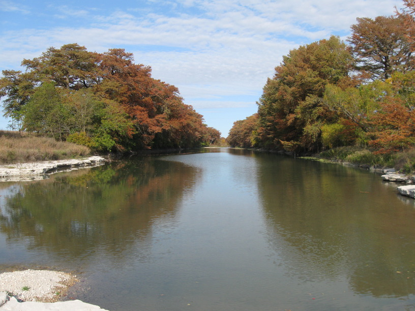
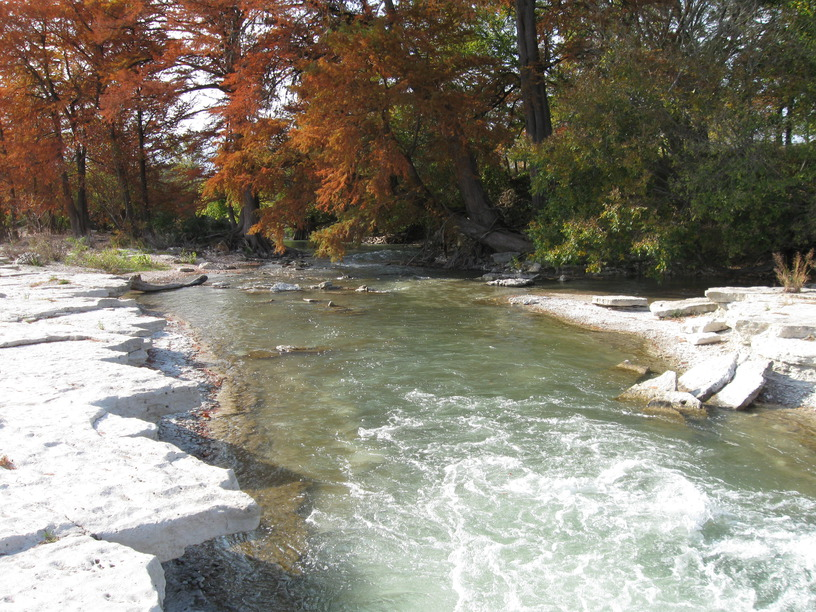
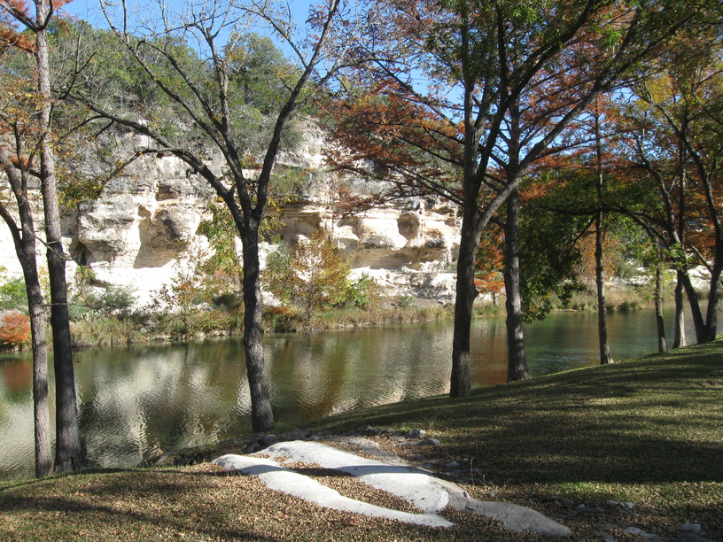
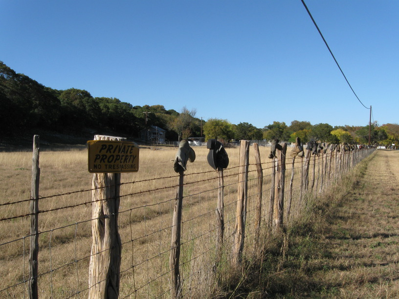
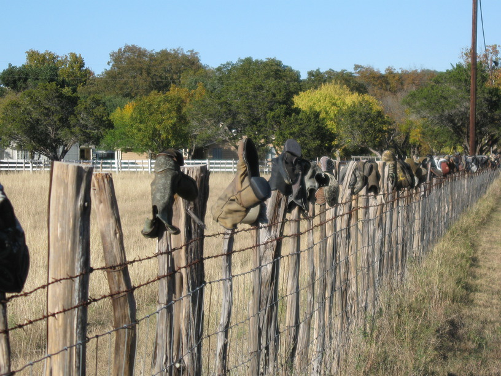

6 Nov 2008, Vanderpool, TX
I'm stealth camping again tonight, but I'm in a much more discreet location—alongside the road but down an embankment & behind trees.
I had my latest day riding so far (relative to the sunset, at least). The state park I'd planned to stay at (Lost Maples) fell through—their hook-up campsites were full, and the primitive sites were not bike accessible—you had to hike to them. Of course, I was arriving at the park right at nightfall, after taking longer to ride my planned distance today than expected (and wasting too much time in Kerrville), so I set out again in the dark with my headlamp on my helmet. After I passed on a few weak options, I spotted trees along the road & a strip of grass heading off behind them. It's a pretty nice spot.
So I don't know how late I actually stopped, but it was probably an hour after sunset. The waxing moon is very bright, though, so that helps.
Notes on food: couscous and foil-packaged meat is a great, simple, filling meal. Whataburger is the TX version of Wendy's.




